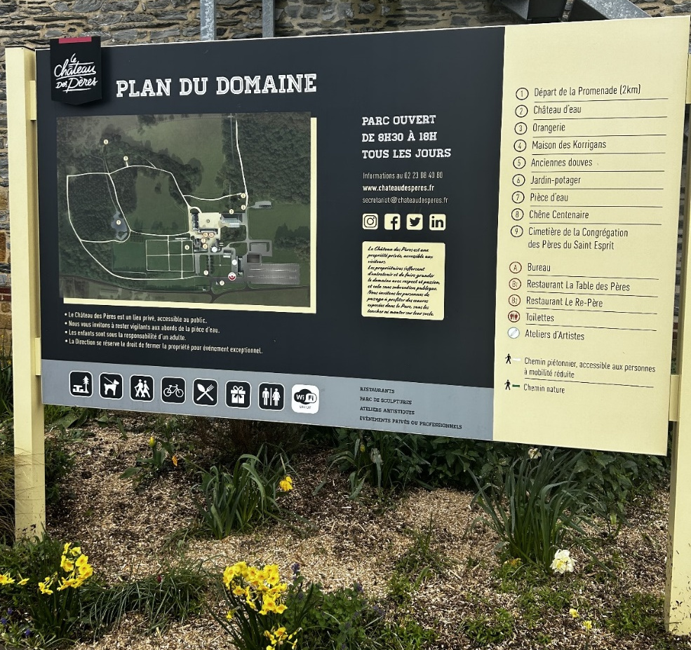

Rendez-vous à ce panneau pour démarrer la chasse au trésor!

Marchez 30m en direction du parc.
Vous remarquez cette grande tour, quelques insectes bizarres s'y sont accrochés.
Comptez le nombre de fenêtres…
Et venez inscrire la réponse ici:
Zut ğŸ™
Bravo ! ğŸ‘
Suivant ⇨
Entrez dans le parc, il est original ce portrait de femme…
Christophe Milcent est un artiste qui utilise une matière en particulier, laquelle?
(un seul mot en minuscule)
Oups 😱
👠Bravo !!
Suivant ⇨
Continuons notre lancée, en avançant encore un peu plus dans le parc vous pourrez remarquer plusieurs personnages.
Vous vous arrêterez sur cette multi tête taillée sur une pierre.
Combien d'yeux comptez-vous?
Recomptez... 😕
Bien vu ! 💪💪💪
Suivant ⇨
Vous l'avez remarqué? Il se voit de loin…
Rejoignez ce gorille un peu particulier!
Arrivé à ses pieds vous compterez combien il y a d'arbres sur cette île?
Oups 😱😱
Oui ! 😃
Suivant ⇨
Après être sorti de la passerelle, vous continuerez votre parcours sur la gauche.
Ce magnifique parc est aussi une représentation de la nature.
Sur votre gauche, vous pourrez remarquer une scenette de chasse.
Combien d'animaux la composent?
Non 👎🙊
Yes ! 💪💪💪
Suivant ⇨
Continuez environ 70m en longeant sur votre droite, vous allez arriver sur le cimetière des moines qui habitaient encore ce château il y a quelques années, avant que celui-ci ne soit racheté par le groupe Legendre.
Le nom "Château des Pères" vient de cette période d'ailleurs.
A gauche de l'entrée du cimetière se trouve une statue avec une citation: comptez le nombre de voyelles?
Non 😟ğŸ˜
Bravo ! 😃🚀
Suivant ⇨
Profitez de ce beau panorama à votre droite pour nous envoyer un beau selfie de famille. 📷
Continuez votre chemin jusqu'Ã trouver cette statue.
Combien y a t'il de lettres de gravées dessus?
Non 👎🙊
Oui ! âââ
Suivant ⇨
Continuez votre chemin jusqu'Ã ce point bleu sur la photo.
Regardez en direction du château.
Qu'est ce qui est représenté sur la fresque?
- 1 - Des poissons
- 2 - Des sirènes
- 3 - Des coquillages
(répondre 1, 2 ou 3)
Ohhh... 😟ğŸ˜
Bravo ! 🧜‍♀️
Suivant ⇨
Maintenant, regardez autour de ce lieu: